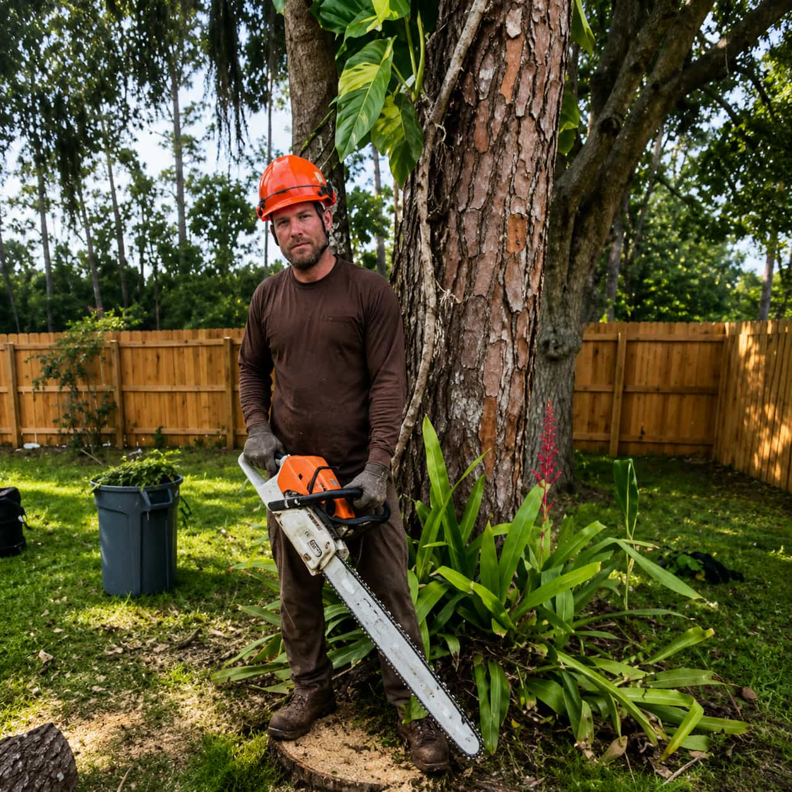

00
Request categories
Tree-related paths organized before provider comparison.
All services
Oakline helps homeowners submit request details and compare participating local provider options. Oakline is not a direct tree service company.
Tree-related paths organized before provider comparison.
Simple flow from project details to provider follow-up.
Availability, scope, cleanup, pricing, and provider terms.
Oakline helps organize requests; providers handle final terms.
Why homeowners use Oakline
Organize the service category, visible tree condition, location, timing.
Share ZIP code, access notes, nearby structures, cleanup expectations.
Compare availability, scope, cleanup approach, pricing factors.
Oakline does not perform tree work. Final terms, pricing, scheduling.
Category guidance
Oakline helps homeowners start with the closest matching category and then add a few practical details. Participating providers can review the request and clarify next steps based on the actual property context.

Service categories
Oakline helps homeowners organize request details and compare participating local provider options where coverage is available.
Compare provider options for dead, leaning, crowded, damaged, or unwanted trees.
Review options for branch clearance, canopy shaping, overgrowth, and maintenance requests.
Submit details for visible stumps, leftover roots, grinding depth, and debris handling.
Share urgent storm details, fallen limbs, blocked access, and cleanup expectations.
Service categories
Oakline helps homeowners organize request details and compare participating local provider options where coverage is available.
Compare participating provider options for dead, leaning, crowded, damaged, or unwanted trees.
Read more
Review provider options for branch clearance, canopy shaping, roofline concerns, and pruning requests.
Read moreSubmit details for visible stumps, leftover roots, grinding depth questions, and debris handling.
Read moreShare urgent storm details, fallen limbs, blocked access, debris concerns, and cleanup expectations.
Read moreCompare options for brush removal, small tree clearing, access corridors, and property preparation.
Read moreConnect with participating providers who may review visible tree condition, risk factors, and next steps.
Read moreOur foundation of trust
Oakline is an independent matching platform. These principles help homeowners understand the platform role, compare provider details, and make informed decisions before moving forward.
We help homeowners organize tree-related details before participating providers review the request.
Homeowners can compare availability, scope, cleanup expectations, pricing factors, and next steps.
Oakline does not directly perform tree work. Final terms come from participating providers.
Provider participation may vary by ZIP code, project type, timing, weather, and coverage.
We encourage homeowners to verify licensing, insurance, scope, cleanup, and provider terms.
The homeowner chooses whether to continue directly with a provider after reviewing the details.
Before you submit
You do not need to know the final scope before contacting Oakline. Basic project context is enough to begin the matching flow and help participating providers understand what may need review.

Provider review note
Participating providers may need photos, a site visit, or additional details before discussing final pricing, scheduling, cleanup expectations, equipment needs, or service terms.
Tree-related projects often depend on real property conditions. A tree close to a roofline, fence, driveway, utility area, slope, or neighboring structure may require a different provider conversation than a tree in an open area.
Oakline helps homeowners organize the first request, but final scope, pricing, licensing, insurance, availability, warranties, and service agreements come directly from participating providers.
Yes. Choose the closest category and explain the situation in the message. Participating providers may ask follow-up questions.
No. Provider availability and service coverage vary by ZIP code, timing, and provider participation.
No. Oakline helps with matching and request routing. Homeowners decide whether to continue with a provider after reviewing provider-specific details.
Participating providers set final pricing, warranties, scheduling, licensing, insurance, and service terms.